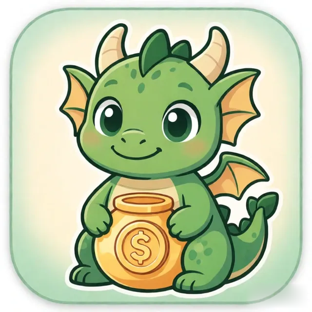

Копим с ИскоркойSparky Savings
Sparky SavingsКопим с Искоркой
Семейная копилка и тренажёр финансовой грамотности: родитель выдаёт карманные деньги по расписанию и награждает за задания, ребёнок видит общий баланс, откладывает на мечту в копилки, пользуется учебным вкладом в «банке» семьи, учится считать в мини-играх и курсе финграмотности и заботится о дракончике Искорке. Всё — без рекламы, покупок и регистрации: работает офлайн, а по желанию синхронизируется между устройствами семьи через семейное облако.A family piggy bank and a financial-literacy trainer: the parent hands out scheduled pocket money and rewards for chores, the child sees the total balance, saves up for dreams in piggy banks, uses the educational family "bank" deposit, learns to count in mini-games and the money course, and takes care of Sparky the little dragon. All of it with no ads, no purchases and no sign-up: it works offline and, optionally, syncs between the family's devices through the family cloud.
СкачатьDownload
Официальные магазины. Если кнопка неактивна — публикация в процессе.Official stores. If a button is disabled, publishing is in progress.
Технические вопросы — appcreators.technolab@ya.ruTechnical questions — appcreators.technolab@ya.ru
СкриншотыScreenshots
Макет вместо скриншотов: здесь появятся настоящие экраны приложения.A mock-up instead of screenshots: real app screens will appear here.
ВозможностиFeatures
Без рекламы, подписок и внутренних покупок. Данные — на вашем устройстве.No ads, subscriptions or in-app purchases. Your data stays on your device.
Как это работаетHow it works
Три шага от установки до первой накопленной мечты.Three steps from install to the first saved-up dream.
Имена, возраст и аватары детей — за минуту, без регистрации и аккаунта.Kids' names, ages and avatars — in a minute, with no registration or account.
Задания с наградами, карманные деньги по расписанию и мечты, на которые копим.Chores with rewards, scheduled pocket money and the dreams you're saving for.
Родитель одобряет «Сделано!» и выдаёт наличные дома — приложение ведёт понятную историю.The parent approves "Done!" and hands out cash at home — the app keeps a clear record.